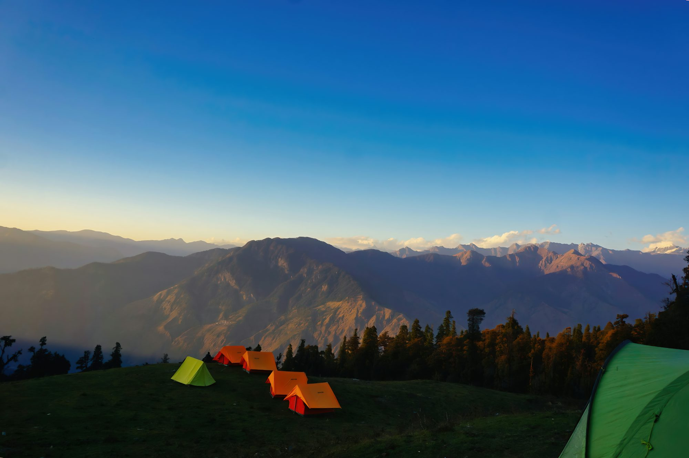
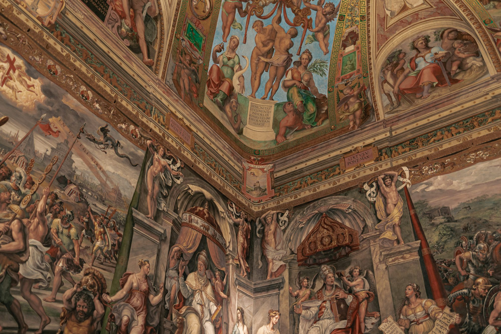
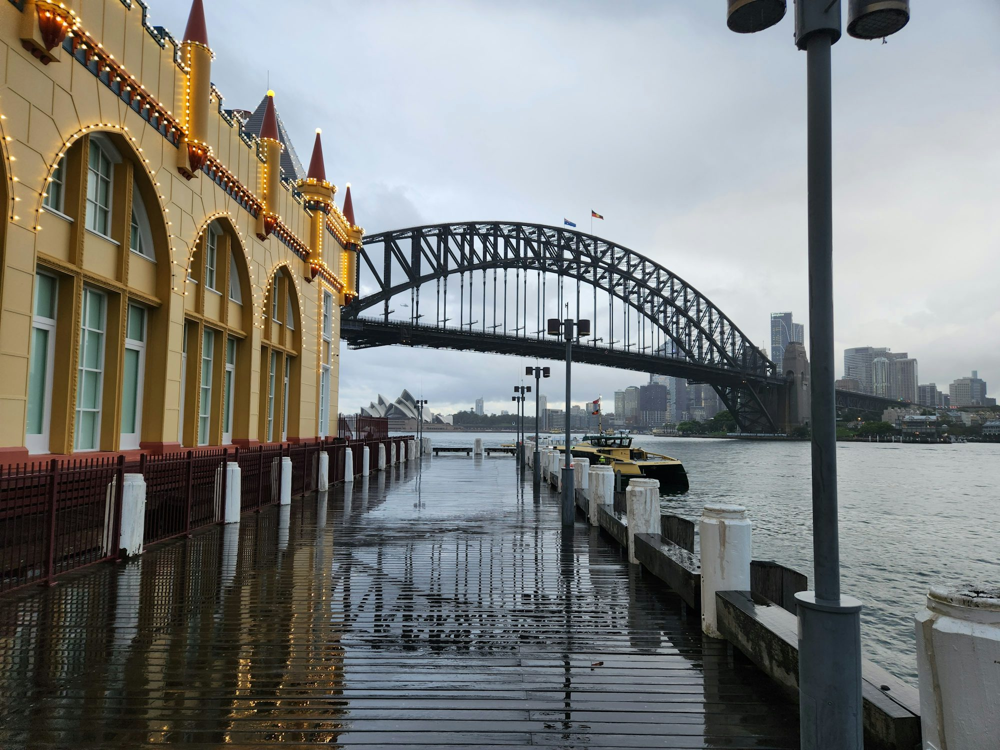
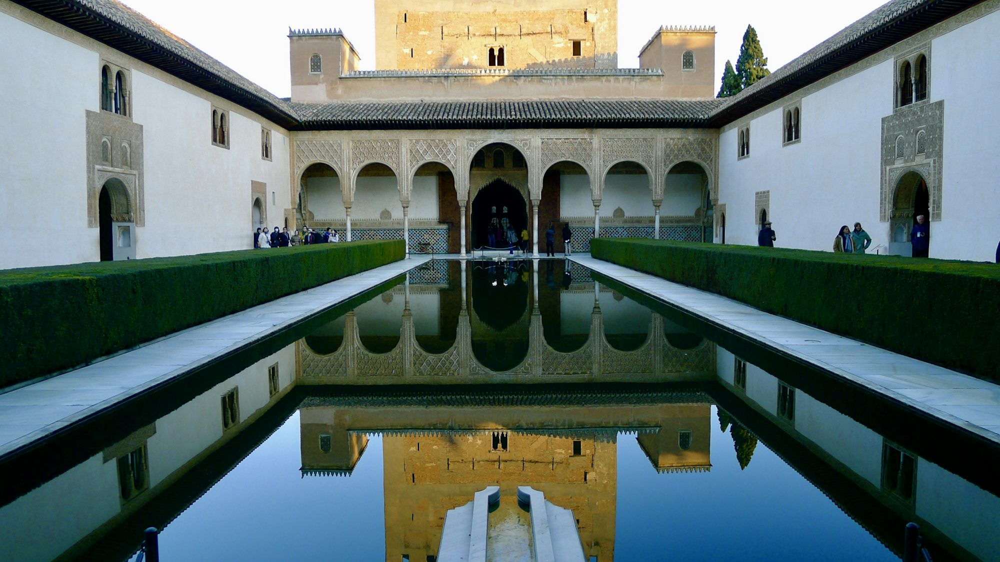

Die zeitlose Schönheit der Architekturwunder
Dieser Artikel befasst sich mit den berühmtesten architektonischen Wundern der Welt, untersucht ihre Geschichte, ihr Design und ihre kulturelle Bedeutung und feiert die Kunst, die unsere gebaute Umgebung prägt.Visuelle erfahrung

05-05-2025
Sophie Matthews
Der ultimative Leitfaden zur Auswahl des perfekten Camping -Erlebnisses
In diesem Artikel können Sie die ideale Art von Camping basierend auf Ihren Vorlieben, Abenteuerniveaus und Komfortbedürfnissen mit Einsichten in traditionelle Campingstile und luxuriösere Optionen auswählen.

09-05-2025
Lucas Anderson
Die Kunst des nachhaltigen Reisens: Die Welt verantwortungsbewusst erkunden
Dieser Artikel befasst sich mit den Prinzipien des nachhaltigen Reisens und bietet Einblicke, wie man die Welt erkunden und gleichzeitig die Auswirkungen auf die Umwelt minimieren und lokale Gemeinschaften unterstützen kann.
08-02-2025
Der Aufstieg der städtischen Gartenarbeit: Anbau von grünen Räumen in Stadtlandschaften
Dieser Artikel untersucht den Trend der städtischen Gartenarbeit, zeigt seine Vorteile, seine innovativen Praktiken und die Umwandlung der Stadtumgebungen in lebendige grüne Räume.

11-15-2025
Sofia Martinez
Kulturelle Wahrzeichen: Schätze des Erbes und der Tradition
In diesem Artikel werden bedeutende kulturelle Wahrzeichen auf der ganzen Welt untersucht und ihre historische Bedeutung, architektonische Schönheit und die Erlebnisse, die sie den Besuchern bieten, hervorgehoben.

Liam Reynolds
Fernweh: Die Welt durch Reisen entdecken
Dieser Artikel untersucht die transformativen Auswirkungen des Reisens und beleuchtet verschiedene Stile sowie die Freude, neue Kulturen und Landschaften zu erleben.

05-28-2025
Emma Sinclair
Enthüllung der Geheimnisse der Antike: Eine Reise durch die Geschichte
In diesem Artikel werden die faszinierenden Vermächtnisse der alten Zivilisationen untersucht, die ihre Kulturen, Erfolge und die Lektionen untersucht, die sie für die moderne Gesellschaft vermitteln.